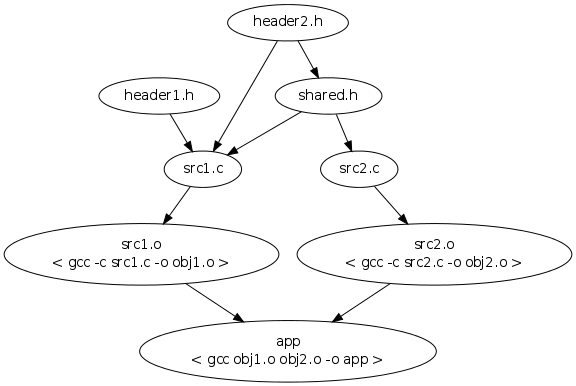

Bam is a build system with the focus on being having fast build times and flexiable build scripts. Instead of having a custom language it uses Lua to describe the build steps. It's written in clean C and is distrubuted under the liberal zlib licence. Available on many platforms including but not limited to Linux, Mac OS X and Windows.
Building bam is easy and have very few dependencies. Make sure that you have GCC and the pthreads library installed and run this command:
sh make_unix.sh
This will build Bam with optimizations turned on. If you want a debug version of Bam, you can invoke the script like this:
sh make_unix.sh -O0 -g
That will turn off the optimizations and include debug information in the build.
To build on windows you need to have either Microsoft Visual C++ or MinGW.
To build with Visual C++, just run press Start, Run and enter cmd.exe and press enter. Then navigate to the Bam directory and type this:
make_win32_msvc.bat
The batch file will automaticly detect the Visual C++ version and setup the compile environment and then build an optimized version of Bam. You should find the exe in the base directory of Bam. If it fails to detect Visual C++ you should have a shortcut in the start-menu for a Visual C++ command-line that setups the compile environment.
To build with MinGW, make sure that you have a correct build environment setup in a console and then run this:
make_win32_mingw.bat
An optimized version of Bam will be built and the exe can be located in the base directory of Bam.
Building Bam works the same way as on Unix-like systems but the script is called make_beos.sh instead. You can build Bam by running:
sh make_beos.sh
Bam comes with a test suite to verify that Bam is working like it should. The suite requires Python to be installed. This test suite is used during the development of Bam to verify that nothing breaks between releases. You can run the test suite by typing this:
python scripts/test.py
It will either print out that all tests where successfull or what tests it didn't pass.
This section is a short introduction to bam and is designed to get you started quickly.
1: settings = NewSettings()
2: source = Collect("src/*.c")
3: objects = Compile(settings, source)
4: exe = Link(settings, "my_app", objects)
Line 1 creates a new settings object. This contains all the settings on how to compile, link etc. See NewSettings.
Line 2 gathers all the files under the src/ directory which has .c as extention. Collect returns a table of strings which are the files. See Collect.
Line 3 compiles the source using the specified settings and returns a table of the object files. See Compile.
Line 4 links the object files to an executable named "my_app", using the specified settings. See Link.
This section describes how you can make your own custom actions needed for your perticular project. An action is just a normal Lua function that adds a series of jobs and dependencies.
For the sake of demonstration, we are going to compile an application without using the supplied Compile and Link actions. Instead we are going to add the jobs and dependencies by hand. We assume that we are running under a Unix like operating system with GCC as tool chain for sake of simplicity.
At the core of Bam there is a dependency graphs that tells one files are dependent on other files. This graph is used to figure out what order to build the target.
Here is a simple graph over and application called app which has the src1.c, src2.c, header1.h, header2.h and shared.h files.

The commands encased in brackets are the commands that is executed in order to build that node.
A job is a command line that needs to be executed to generate an output file. All actions results in a series of jobs being added to the node graph.
To compile src1.c into obj1.o we simply add this to our bam file:
AddJob("obj1.o", "compiling src1.c", "gcc -c src1.c -o obj1.o")
Bam now knows that inorder to get obj1.o, it must run "gcc -c src1.c -o obj1.o". It will print "compiling app.c" when this is happening as a nice indicator instead of spewing out the whole command line that it ran. See AddJob for a complete reference of the function.
Now that we can compile our object, we need to link it as well. To link the application, we add this to our bam file:
AddJob("app", "linking app", "gcc obj1.o obj2.o -o app")
Bam now knows that inorder to get app, it must run "gcc obj1.o obj2.o -o app".
We can now build our application by running these commands from a shell:
# bam obj1.o # bam obj2.o # bam app
We must run all three commands because Bam does not yet know that it needs to build obj1.o and obj2.o before it can build app. This is where dependencies comes in.
To tell Bam that app needs obj1.o and obj2.o, we simply add a dependency. This is done with the AddDependency function like this:
AddDependency("app", "obj1.o", "obj2.o")
AddDependency("obj1.o", "src1.c")
AddDependency("obj2.o", "src2.c")
AddDependency("src1.c", "header1.h", "header2.h", "shared.h")
AddDependency("src2.c", "shared.h")
AddDependency("shared.h", "header2.h")
This tells Bam that app needs obj1.o and obj2.o inorder to build. We also added the source files as dependencies for the object files. This will make sure that bam rebuilds obj1.o when src1.c changes. Also, we added the dependencies for the source and header files so Bam can figure out want needs to be built if one of those changes. See AddDependency for a complete reference of the function.
Here is an example of it all working together.
AddJob("myapp.o", "compiling myapp.c", "gcc -c myapp.c -o myapp.o")
AddJob("myapp", "linking myapp", "gcc myapp.o -o myapp")
AddDependency("myapp", "myapp.o")
AddDependency("myapp.o", "myapp.c")
DefaultTarget("myapp")
There is also a shortcut that you can use
TODO: Some nice text about this
Here is a small function that takes one C file as a string and returns the object file as one string. This is an over simplification of the supplied Compile function and serves just as an example.
function Compile(cfile) output = PathBase(cfile) .. ".o" AddJob( output, "Compiling " .. cfile, "gcc -c " .. cfile .. " -o " .. output ) AddDependency(output, cfile) return output end
Specify a target to be built. A target can be any output specified to the AddJob function.
If no targets are specified, the default target will be built If there are no default target and there is only one target specified with the Target function, it will be built. Otherwise bam will report an error.
There is a special pseudo target named all that represents all targets specified by the Target function.
Sets a script argument. These arguments can be fetched form the build script by accessing the ScriptArgs table.
Setting this will cause bam to abort the build process when an error has occured. Normally it would continue as far as it can.
Cleans the specified targets or the default target.
Builds all targets that are dependent on the given targets. If no targets are given this option doesn't do anything.
Does everything that it normally would do but does not execute any commands.
Sets the number of threads used when building. A good value for N is the same number as logical cores on the machine. Set to 0 to disable.
Bam file to use. In normal operation, Bam executes bam.lua. This option allows you to specify another bam file.
Prints local and up values in the backtrace when there is a script error
Prints backtrace when there is a script error
Sets the format of the progress report when building.
Prints all commands that are runned when building.
Do not use cache when building.
Prints out a short reference of the command line options and quits directly after.
Dumps all nodes in the dependency graph.
Dumps all nodes in the dependency graph, their state and their dependent nodes. This is useful if you are writing your own actions to verify that dependencies are correctly added.
Dumps all nodes in the dependency graph into a dot file that can be rendered with graphviz.
Dumps all jobs and their dependent jobs into a dot file that can be rendered with graphviz.
Prints a the function and source line for every instruction that the vm makes.
Tells bam what version this script is written for. It will either make sure that it behaves like that version or print out an error.
CheckVersion("0.1.0")
Executes the command in the shell and returns the error code.
Does the same as Execute(command) but supresses stdout and stderr of that command.
Gathers a set of files using wildcard. Accepts strings and tables of strings as input and returns a table of all the files that matches A single wildcard * may be used in each string to collect a set of files.
Example:
source_files = Collect("src/*.c", "lib/*.c")
Note. This version collects files, non-recursive.
Collects files as the Collect but does so recursivly.
Collects directories in the same fashion as Collect but returns directories instead.
Collects directories in the same fashion as Collect but does so recursivly and returns directories instead.
Adds a job to be done. The output string specifies the file that will be created by the command line specified in command string. The label is printed out before command is runned. You can also add extra parameters, those will become for dependencies for the job.
AddJob("myapp.o", "compiling myapp.c", "gcc -c myapp.c -o myapp.o")
AddDependency("myapp.o", "myapp.c")
This is the same as this:
AddJob("myapp.o", "compiling myapp.c", "gcc -c myapp.c -o myapp.o", "myapp.c")
You can also add several dependencies at once like this:
AddJob("myapp", "linking myapp", "gcc myapp1.o myapp2.o myapp3.o -o myapp.o", {"myapp1.o", "myapp2.o"}, "myapp3.o")
Adds dependencies to a job. The files specified in the argument list gets added. Strings and nested tables of strings are accepted.
Searches for dependencies in the specified paths and adds them to the file.
Imports a script specified by filename. A search for the script will be done by first checking the current directory and then the paths specified by the BAM_PACKAGES environment variable. Several paths can be specified in the variable by separating them by a ':' character.
The importing script can figure out it's path by calling the ModuleFilename function.
Returns the filename of the current script being imported (by Import) as relative to the current working directory.
Normalizes the path str by removing ".." and "." from it.
Path("test/./path/../file.name.ext") -- Returns "test/file.name.ext"
Path("../test/../path/file.name.ext") -- Returns "../path/file.name.ext"
Returns the everthing except the extention in the path.
PathBase("test/path/file.name.ext") -- Returns "test/path/file.name"
PathBase("test/path/file.name") -- Returns "test/path/file"
PathBase("test/path/file") -- Returns "test/path/file"
Returns the extension of the filename in str.
PathFileExt("test/path/file.name.ext") -- Returns "ext"
Returns the filename of the path in str.
PathFilename("test/path/file.name.ext") -- Returns "file.name.ext"
Joins the two paths base and add together and returns a normalized path. This function haldes trailing path separators in the base argument.
PathJoin("test/path/", "../filename.ext") -- Returns "test/filename.ext"
PathJoin("../test", "path/filename.ext") -- Returns "../test/path/filename.ext"
Returns the path of the filename in str.
PathDir("test/path/file.name.ext") -- Returns "test/path"
Adds a new tool called name to bam. The func will be called when NewSettings function is invoked with the settings object as first parameter.
Create a new settings table with the settings for all the registered tools. This table is passed to many of the tools and contains how they should act.
Makes a deep copy of the table tbl resulting in a complete separate table.
Does a deep walk of the tbl table for strings and generates a new flat table with the strings. If it occurs anything else then a table or string, it will generate an error.
-- Returns {"a", "b", "c", "d", "e", "f"}
TableFlatten({"a", {"b", {"c"}, "d"}, "e", {}, {"f"}})
Locks the table tbl so no new keys can be added. Trying to add a new key will result in an error.
Takes every string element in the tbl table, prepends prefix and appends postfix to each element and returns the result.
TableToString({"a", "b"}, "", "") -- Returns "ab"
Returns an iterator that does a deep walk of a table looking for strings. Only checks numeric keys and anything else then table and strings will cause an error.
for filename in TableWalk({...}) do
print(filename)
end
Specifies the default target use build when no targets are specified when bam is invoked.
Creates a pseudo target named name and assigns a set of dependencies specified by ....
Name of the settings. TODO: explain when you could use it
A short postfix that you can append to files that have been built by this configuration.
Prefix to use for all jobs that are added. TODO: this option feels a bit strange
Compiles a set of files using the supplied settings. It uses settings.compile.mappings to map the input extension to a compiler function. A compiler functions should look like Compiler(settings, input) where settings is the settings object and input is the filename of the file to compile. The function should return a string that contains the object file that it will generate.
function MyCompiler(settings, input) -- compile stuff return output endsettings.compile.mappings".my" = MyCompiler objects = Compile(settings, "code.my") -- Invokes the MyCompiler function
| mappings | Table that matches extentions to a compiler function. See the Compile function for a reference how this table is used. |
| defines |
Table of defines that should be set when compiling.
settings.cc.defines:Add("ANSWER=42")
|
| DriverC | Function that drives the C compiler. Function is responsible for building the command line and adding the job to compile the input file. |
| DriverCXX | Same as DriverC but for the C++ compiler. |
| exe_c | Name (and path) of the executable that is the C compiler |
| exe_cxx | Same as c_exe but for the C++ compiler |
| extension | Extention that the object files should have. Usally ".o" or ".obj" depending on compiler tool chain. |
| flags |
Table of flags that will be appended to the command line to the
C/C++ compiler. These flags are used for both the C and C++
compiler.
settings.cc.flags:Add("-O2", "-g")
|
| flags_c | Same as flags but specific for the C compiler. |
| flags_cxx | Same as flags but specific for the C++ compiler. |
| frameworks | Mac OS X specific. What frameworks to use when compiling. |
| includes |
Table of paths where to find headers.
settings.cc.includes:Add("my/include/directory")
|
| Output(settings, path) |
Function that should transform the input path
into the output path. The appending of the extension is done
automaticly.settings.cc.Output = function(settings, input) return PathBase(input) .. settings.config_ext end |
| systemincludes | Mac OS X specific. Table of paths where to find system headers. |
TODO
| Driver | Function that drives the linker. Function is responsible for building the command line and adding the job to link the input files into an executable. |
| exe | Path to the executable to use as linker. |
| extension | Extention of the executable. Usally "" on most platform but can be ".exe" on platforms like Windows. |
| extrafiles | A table of additional files that should be linked against. These files will be treated as normal objects when linking. |
| flags |
Table of raw flags to send to the linker.
settings.link.flags:Add("-v")
|
| frameworks | Mac OS X specific. A table of frameworks to link against. |
| frameworkpath | Mac OS X specific. A table of paths were to find frameworks. |
| libs |
Table of library files to link with.
settings.link.libs:Add("pthread")
|
| libpath | A table of paths of where to find library files that could be included in the linking process. |
| Output |
Function that should transform the input path
into the output path. The appending of the extension is done
automaticly.settings.link.Output = function(settings, input) return PathBase(input) .. settings.config_ext end |
| inputflags (REMOVE?) |
TODO
Copyright (c) 2009 Magnus Auvinen
This software is provided 'as-is', without any express or implied
warranty. In no event will the authors be held liable for any damages
arising from the use of this software.
Permission is granted to anyone to use this software for any purpose,
including commercial applications, and to alter it and redistribute it
freely, subject to the following restrictions:
1. The origin of this software must not be misrepresented; you must not
claim that you wrote the original software. If you use this software
in a product, an acknowledgment in the product documentation would be
appreciated but is not required.
2. Altered source versions must be plainly marked as such, and must not be
misrepresented as being the original software.
3. This notice may not be removed or altered from any source
distribution.